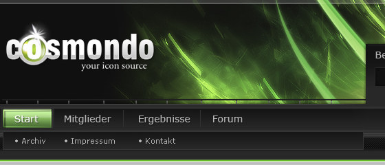
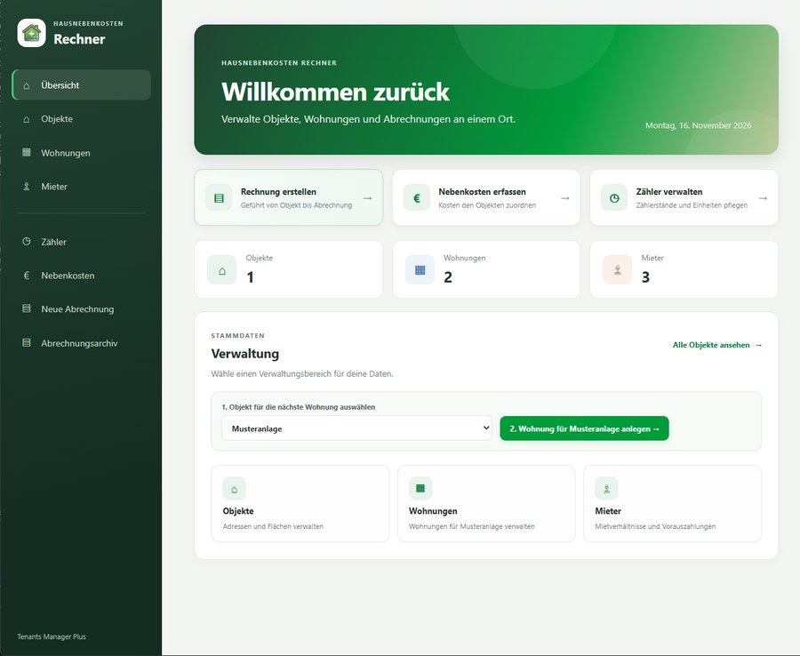
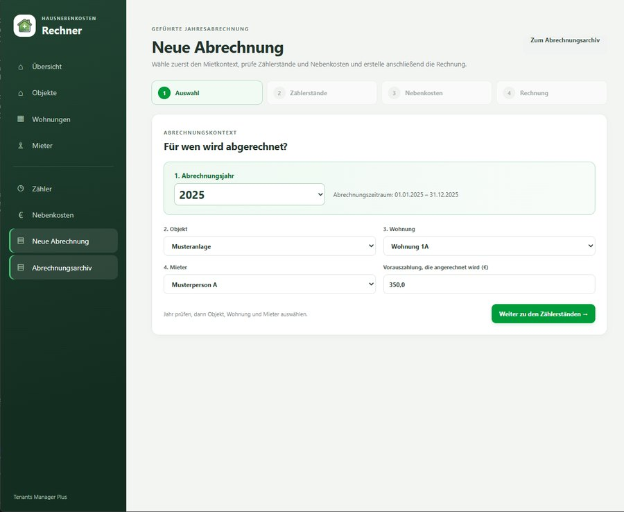
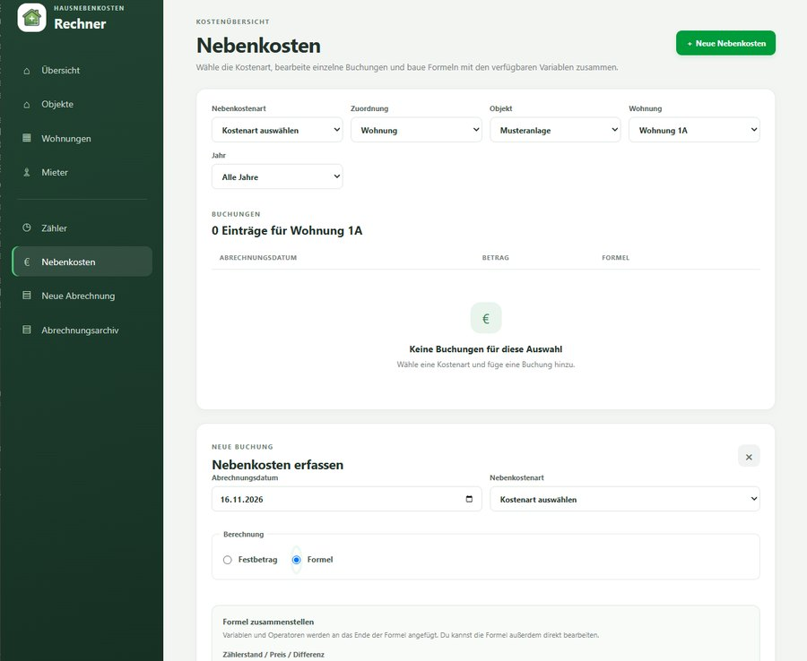

Ich entwickle mit C# und .NET Anwendungen, APIs und Datenlösungen, die im Alltag funktionieren: wartbar, sauber geschichtet und nah an der Fachlichkeit. Nach Jahren in der Möbel- und Fensterbaubranche freue ich mich auf neue Branchen, in denen ich Abläufe verstehen und daraus gute Software bauen kann.I build applications, APIs and data solutions with C# and .NET that hold up in everyday use: maintainable, cleanly layered and close to the business domain. After years in the furniture and window-construction industries, I am looking forward to new industries where I can understand processes and turn them into good software.
Senior Software DeveloperSeit 2010 in der AnwendungsentwicklungIn application development since 2010
C# / .NETWPF, REST-APIs, EF CoreWPF, REST APIs, EF Core
AI-EntwicklungAI developmentMit Copilot, Claude Code und Agentic AIWith Copilot, Claude Code and agentic AI
Über michAbout me
Softwareentwicklung · Detmold, LippeSoftware development · Detmold, Germany
Hallo, ich bin Tristan.Hello, I’m Tristan.
Willkommen auf meiner Webseite! Schön, dass du vorbeischaust. Ich bin Jahrgang 1988 und lebe in Detmold.Welcome to my website! I’m glad you stopped by. I was born in 1988 and live in Detmold, Germany.
Meine Begeisterung für Technik und Computer begleitet mich seit meiner Kindheit. Schon in der weiterführenden Schule hat mich die Informatik gepackt, wenig später kam die Faszination für Webdesign dazu.Technology and computers have fascinated me since childhood. I got hooked on computer science at secondary school, and soon afterwards discovered a passion for web design.
Ideen werden zu ErlebnissenTurning ideas into experiences
Seitdem liebe ich es, eigene Ideen umzusetzen, kreativ zu sein und Neues auszuprobieren. Besonders begeistert mich, wenn aus einer ersten Idee und ein paar Zeilen Code Schritt für Schritt etwas entsteht, das nicht nur funktioniert, sondern auch andere Menschen begeistert und gerne genutzt wird.Ever since, I’ve loved bringing my own ideas to life, getting creative and trying new things. I’m especially excited when an idea and a few lines of code grow into something that not only works, but delights people and is a pleasure to use.
Desktop mit Blick aufs WebDesktop development with a web perspective
Beruflich bin ich heute vor allem im Desktop-Bereich zu Hause, mit C#, .NET und WPF. Das Web begleitet mich dabei immer wieder. Durch KI und Projekte mit Blazor beschäftige ich mich auch wieder mehr mit Webentwicklung.Professionally, I mainly work in desktop development with C#, .NET and WPF. Web development comes up from time to time, and AI as well as Blazor projects have brought me back to it more often.
Ich analysiere gerne Prozesse und entwickle daraus Schritt für Schritt passende Lösungen. Dabei verbinde ich analytisches Denken mit einer prozessorientierten Arbeitsweise. Die Mischung aus Kreativität, eigenen Ideen und immer neuen Herausforderungen macht meinen Beruf für mich so spannend.I enjoy analysing processes and turning them into fitting solutions, step by step. I combine analytical thinking with a process-oriented approach. The mix of creativity, bringing ideas to life and tackling new challenges is what makes my work so rewarding.
WerdegangCareer
Senior Software Developer
Seit 03.2021 · GO-2B – Compusoft Deutschland AG, GüterslohSince Mar 2021 · GO-2B – Compusoft Deutschland AG, Gütersloh
5 Jahre5 years
Weiterentwicklung eines zentralen PIM-Systems für die Möbelbranche sowie schrittweise Migration bestehender Legacy-Komponenten nach C# und .NETOngoing development of a central PIM system for the furniture industry and step-by-step migration of existing legacy components to C# and .NET
Implementierung und Pflege von Anpassungen des IDM-Datenformats im PIM-SystemImplementation and maintenance of adaptations to the IDM data format in the PIM system
Konzeption und Implementierung einer REST-API mit C# und .NET zur Integration und Bereitstellung von PIM-DatenDesign and implementation of a REST API with C# and .NET for integrating and providing PIM data
Entwicklung und Datenzugriff mit Entity Framework Core und Microsoft SQL ServerDevelopment and data access with Entity Framework Core and Microsoft SQL Server
Entwicklung und Pflege von Desktop-Anwendungen mit C#/.NET und WPF unter Verwendung des MVVM-PatternsDevelopment and maintenance of desktop applications with C#/.NET and WPF using the MVVM pattern
Umsetzung wartbarer Software nach Clean Code, SOLID und SchichtenarchitekturMaintainable software built on Clean Code, SOLID and layered architecture
Selbstständige Konkretisierung von Features in User Stories sowie Umsetzung fachlicher AnforderungenIndependent refinement of features into user stories and implementation of business requirements
Agile Softwareentwicklung nach Scrum und Aufgabenplanung mit Azure DevOpsAgile development with Scrum and task planning in Azure DevOps
Versionsverwaltung mit Git und GitHub, teaminterne Code Reviews sowie automatisierte Tests und Code-Qualitätsprüfungen im EntwicklungsprozessVersion control with Git and GitHub, team code reviews, automated tests and code quality checks in the development process
Einsatz von GitHub Copilot und Claude Code zur KI-gestützten Softwareentwicklung, einschließlich agentenbasierter EntwicklungsansätzeUse of GitHub Copilot and Claude Code for AI-assisted software development, including agent-based approaches
Fachinformatiker AnwendungsentwicklungIT Specialist, Application Development
08.2013 – 02.2021 · M3B Fentec GmbH & Co. KG, Bad SalzuflenAug 2013 – Feb 2021 · M3B Fentec GmbH & Co. KG, Bad Salzuflen
7 Jahre7 years
Weiterentwicklung und Optimierung einer ERP-Software für die Fensterbaubranche (Legacy-Applikation) sowie Modernisierung bestehender Komponenten auf Basis des .NET Frameworks 4.8Ongoing development and optimisation of an ERP software for the window-construction industry (legacy application) and modernisation of existing components based on .NET Framework 4.8
Weiterentwicklung einer branchenunabhängigen ERP- und CRM-SoftwareOngoing development of an industry-independent ERP and CRM software
Fertigung: zahlreiche Fertigungslisten und Auswertungen mit dem Reporting-Tool List & LabelManufacturing: numerous production lists and reports built with the reporting tool List & Label
Papierlose Fertigung mit Infoterminals in der Produktion, einschließlich Kommissionierung und WareneingangPaperless manufacturing with info terminals on the shop floor, including order picking and goods receipt
Schnittstelle zu einem LVS (Lagerverwaltungssystem) zur Anbindung von Kommissionierung und WareneingangInterface to a warehouse management system (LVS) connecting order picking and goods receipt
Kaufmännischer Bereich, unter anderem das Mahnwesen und eine Schnittstelle zur DATEV-BuchhaltungCommercial area, including dunning (Mahnwesen) and an interface to DATEV accounting
Entwicklung eines webbasierten Fenster- und Rollladenkonfigurators mit PHP, JavaScript und jQuery sowie AJAX-basierter Kommunikation zwischen Client und ServerWeb-based window and roller shutter configurator built with PHP, JavaScript and jQuery, with AJAX communication between client and server
Implementierung von Schnittstellen zur Integration externer Systeme auf Basis von SOAP-Webservices und REST-APIs, zum Beispiel zur Tourenplanung (PTV xServer), zu Rollladen-Produktkonfiguratoren (Rodenberg, Obuk), zu Türenkonfiguratoren und zu einem 3D-Konstruktionsprogramm für WintergärtenInterfaces for integrating external systems based on SOAP web services and REST APIs, for example to route planning (PTV xServer), roller shutter product configurators (Rodenberg, Obuk), door configurators and a 3D design program for conservatories
Webdesign in der SchulzeitWeb design during school
Meinen Einstieg in die Softwareentwicklung habe ich schon in der Schulzeit gefunden, und zwar im Web. Mich hat fasziniert, wie aus einer Idee im Kopf ein fertiges Layout wird, das im Browser wirklich funktioniert. Aus dem Ausprobieren wurde schnell mehr: Ich habe viel Webdesign gemacht und eigene Seiten gebaut.I found my way into software development during my school years, and it started on the web. I was fascinated by how an idea in your head becomes a finished layout that actually works in the browser. Trying things out soon became more: I did a lot of web design and built my own sites.
Den Anfang machten Seiten und kleine Designs für E-Sport-Teams: Header, Navigation, News-Bereiche, Match-Übersichten und Login-Boxen. Dabei hat sich mein Stil entwickelt, von hellen, freundlichen Layouts bis zu dunklen Clan-Designs mit viel Atmosphäre.It began with sites and small designs for esports teams: headers, navigation, news sections, match overviews and login boxes. That is where my style developed, from bright, friendly layouts to dark clan designs full of atmosphere.

Ausschnitt: Header einer E-Sport-Seite (Originalgröße)Excerpt: header of an esports site (original size)
Später habe ich mit dem CMS webSPELL gearbeitet und eigene Templates dafür gestaltet. Mir war wichtig, valides, semantisches XHTML und CSS zu schreiben und mich an die W3C-Vorgaben zu halten, damit sich ein Design über sinnvolle Klassen leicht anpassen und erweitern lässt.Later I worked with the webSPELL CMS and designed my own templates for it. It was important to me to write valid, semantic XHTML and CSS and to follow the W3C standards, so that a design can be adapted and extended easily through meaningful classes.
Noch später sind private Seiten dazugekommen, die ich mit dem CMS WordPress umgesetzt habe. Aus dieser Zeit stammt mein Blick für das Frontend: wie ein Design aufgebaut ist, wie es sich anfühlt und wie sauber der Code dahinter ist. Für meinen heutigen Beruf war das ein guter Einstieg.Later came private sites that I built with the WordPress CMS. This is where my eye for the frontend comes from: how a design is structured, how it feels and how clean the code behind it is. It was a good start for my current profession.
Staatlich geprüfter BetriebswirtState-certified Business Administrator (Staatlich geprüfter Betriebswirt)Dietrich-Bonhoeffer-Berufskolleg, Detmold · 08.2019 – 07.2022Dietrich-Bonhoeffer-Berufskolleg, Detmold · Aug 2019 – Jul 2022
Fachinformatiker AnwendungsentwicklungIT Specialist, Application Development (apprenticeship)M3B Service GmbH, Bad Salzuflen · 08.2010 – 07.2013M3B Service GmbH, Bad Salzuflen · Aug 2010 – Jul 2013
Kfm. Assistent für InformationsverarbeitungCommercial Assistant for Information ProcessingDietrich-Bonhoeffer-Berufskolleg, Detmold · 08.2006 – 07.2010Dietrich-Bonhoeffer-Berufskolleg, Detmold · Aug 2006 – Jul 2010
Private ProjektePersonal projects
Hausnebenkostenrechner
Tenant Manager Plus · Blazor, C#, .NET
Privates ProjektPersonal project
Eine Webanwendung für Vermieter, mit der sich die jährliche Nebenkostenabrechnung für jeden Mieter erstellen lässt. Ich habe sie als privates Projekt mit Blazor entwickelt.A web application for landlords that creates the annual utility bill for each tenant. I built it as a personal project with Blazor.
Objekte mit ihren Wohnungen und Wohnungen mit ihren Mietern verwaltenManage properties with their apartments and apartments with their tenants
Zähler pro Objekt erfassen: Strom und Heizkosten werden über die Zählerstände berechnetRecord meters per property: electricity and heating costs are calculated from the meter readings
Beliebige weitere Nebenkosten wie Abfall oder Hausmeistertätigkeiten, als Festbetrag oder per FormelAny other utility costs such as waste or caretaker services, as a fixed amount or by formula
Geführte Jahresabrechnung in vier Schritten: Auswahl, Zählerstände, Nebenkosten, RechnungGuided annual billing in four steps: selection, meter readings, costs, invoice
Ausgabe der Rechnung für jeden Mieter als PDFInvoice for each tenant as a PDF

Übersicht mit Objekten, Wohnungen und MieternOverview with properties, apartments and tenants

Geführte Abrechnung in vier SchrittenGuided billing in four steps

Nebenkosten erfassen, auch per FormelEntering utility costs, also by formula
Weitere ProjekteMore projects
Ich bin offen für weitere spannende private Projekte und neue Ideen.I’m open to other interesting personal projects and new ideas.